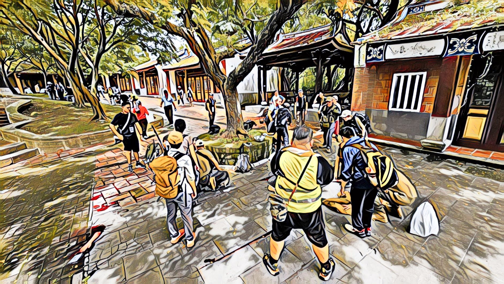

今天參加了黑熊學院的藍鵲行動，這是一場大型演訓，就像是一個模擬真實且讓大家思考如何生存的大地遊戲。
先說結論：我很推薦，如果以下的討論你看了也有同感，下次開放報名時，給自己一個機會參與。
演訓的狀況設計非常貼近真實：第五縱隊滲透成功並發動攻擊，導致臺灣斷水斷電，手機訊號也不通，你要跟著自己的上班同事，或街坊鄰居，組成小隊，在資源耗盡前，前往擁有更多補給的避難點。
在移動的過程中，會有帶著紅臂章的敵軍巡邏，小隊要能合作、自主分工、偵查回報，並互相支持。
在任務中，也有許多認真的演員，模擬敵國導彈打中人口密集區造成大量傷患，你剛好經過，該如何快速有效的救助同胞？

這是個很好的機會，在一天的時間內，去檢驗你所準備的 EDC（EveryDay Carry 每日攜帶物），是否能有效協助你存活一天？對於解放軍導彈攻擊造成的大量傷患事件，如果剛好傷到家人朋友，你是否有應對能力？在只憑著地圖跟片段資訊的狀況下，能不能到達該去的地方？移動的過程，是不是能有效避開敵人的巡邏抓捕？
黑熊學院設計的活動，支持性很好，這些面向都有涵蓋到，但整體難度不至於太高，讓習慣坐辦公桌的一般老百姓也能參與，重點是在實際體驗並刺激思考。我參加的這場，有 70 歲的長輩，有小學生，也有多位網路名人一起參與。
為什麼會想參與這樣的活動呢？其實很簡單，因為藍鵲行動大型演訓所模擬的狀況，是真有可能會發生的。
假設一個總統候選人選上了，他立刻推動其政見，成立兩岸和平實驗區，金門開放之後，迅速開放臺北市成為下一個試點，以服務在台灣的中國人為由，武警公安解放軍都開始進駐。有天，他們瞬間癱瘓臺灣的水電資訊系統，造成恐慌，並搭配導彈攻擊重要設施，偏偏導彈缺晶片，所以打不準，該打發電廠的，竟然飛進大型購物中心。
機會很小，但並不是零。你我心裡都清楚，這樣的候選人，民調曾經很高。
真的發生時，如果我什麼都沒準備，難道要罵蔡英文？或者是沒有蔡英文當總統可以罵的時候，要打自己的伴侶小孩嗎？還是在當生命受到威脅的時候，正向思考，還好新總統准許我多養一隻寵物？還是在真正遇到危機時，叫小孩把問題列出來，根據緊急跟重要分成 1 到 4 分，然後一個一個問孩子，這些問題解決了嗎？我想以上都不是很有建設性的方式，我自己光想都覺得糟糕無能。
如果真有那一天的到來，即使這個機會只有 1/1000 不到，我也希望跟家人一起帶著 EDC 背包前往避難點時，我不是第一次這麼做。
就像要開車載家人出門旅遊之前，你一定會先去駕訓班、先自行上路開幾次一樣。
人是很聰明的生物，只要參加過幾次演訓，你的思考、你的行為，慢慢的都會往更專業的方向準備。就像是還沒有接觸病菌之前，先打了疫苗，真遇到病菌時，免疫系統有了一些記憶，反應起來就會又快又好。
對我來說，參加這些活動是相當療癒的過程。因為你會看到一個跟網路酸民與失敗主義完全不同的世界，有那麼多人願意花自己的時間去學習如何保護自己與家人，而不是在鍵盤上當個高談闊論的言論巨人，但實際上卻只是個行動侏儒。你會知道把臺灣當成家園，願意付出行動與隨機夥伴互相扶持的，原來那麼多。
而且，因為颱風已近，今天來到現場的所有人，都有準備在風雨中也要繼續，雨具跟衣物都帶了。因為我們知道，你真需要避難的那天，可能大風大雨，也可能寒流熱浪。
更別說為了這整個活動，規畫、設計、執行、溝通的所有工作人員，前一天還在擔心會不會停止上班上課，並持續與所有人聯繫，很用心且完善。
忙完七個小時的戶外避難演訓後，回到家裡，打開依然有電的冰箱，大口喝著冰水，那真是自由的滋味，安居樂業原來如此幸福。
誰想破壞我的家園、我的生活、讓我的家人受苦，我會盡全力避免這樣的事情發生。
我從不認為跪下或投降，讓對方的軍人警察接管我們心愛的家園，是一個可行的選項。新疆、香港、西藏都已經很清楚示範了。用選票做出正確決定，拒絕和平實驗區、拒絕跟完全沒有信用的政權簽和平協議、做好各種備戰與避難準備，才是一個真正的自由人。
相關連結
六大情境模擬戰時！2023黑熊學院 [藍鵲行動] 大型演訓